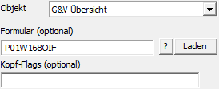
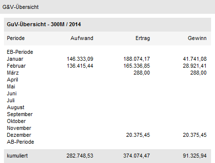

Externes Objekt - Typ "Objekt - G&V-Übersicht"
Mit Hilfe des Objekts "G&V-Übersicht" können die Summen der Aufwände und Erlöse, sowie der Gewinn / Verlust pro Periode und kumuliert ausgegeben werden. Welche Informationen dabei genau angedruckt werden sollen, wird über ein extra Formular gesteuert. Es handelt sich hierbei um ein mandantenbezogenes Objekt (d.h. Feld "Text" oder Bereich "View / Var" darf nicht gefüllt sein).

Ø Formular
An dieser Stelle wird das Formular für den Andruck der
Informationen (Standardformular "P01W168OIF") hinterlegt. Mit Hilfe des Icons
 kann die Formularliste geöffnet
werden, um nach einem Formular zu suchen. Zusätzlich besteht die Möglichkeit das
ausgewählte Formular mit Hilfe des Buttons
kann die Formularliste geöffnet
werden, um nach einem Formular zu suchen. Zusätzlich besteht die Möglichkeit das
ausgewählte Formular mit Hilfe des Buttons  direkt zu öffnen.
direkt zu öffnen.
Ø Kopf-Flags (optional)
Bei diesem Objekt werden keine Kopf-Flags unterstützt.
Beispiel - Externes Objekt mit dem Typ "Objekt" - Objekt "G&V-Übersicht"
